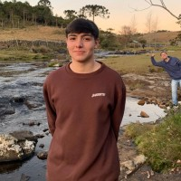

Rafael Laurentino Fernandes
Rafael é um sonhador incansável, sempre com um livro à mão e os olhos brilhando de curiosidade. Em suas caminhadas pela cidade, ele encontra beleza nas pequenas coisas, como o canto dos pássaros e o riso das crianças. Com um coração generoso, ele se dedica a ajudar os outros, espalhando esperança por onde passa.
João Ricardo Esteves
João é um aventureiro nato, sempre em busca de novos desafios e experiências. Com um sorriso contagiante, ele se destaca entre os amigos, trazendo alegria e energia a cada encontro. Apaixonado pela natureza, João passa seus fins de semana explorando trilhas e compartilhando histórias ao redor de uma fogueira.

Kaike Vieira
Kaike é um artista apaixonado, sempre em busca de novas inspirações para suas obras. Ele transforma a vida cotidiana em arte, capturando momentos efêmeros com sua câmera. Com uma visão única, Kaike encanta todos ao seu redor, trazendo cor e emoção para o mundo.